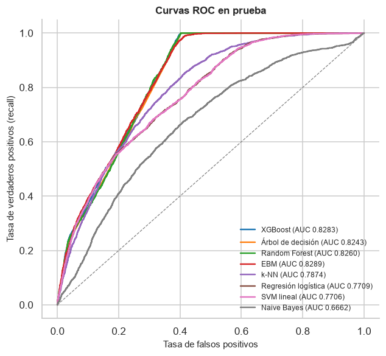
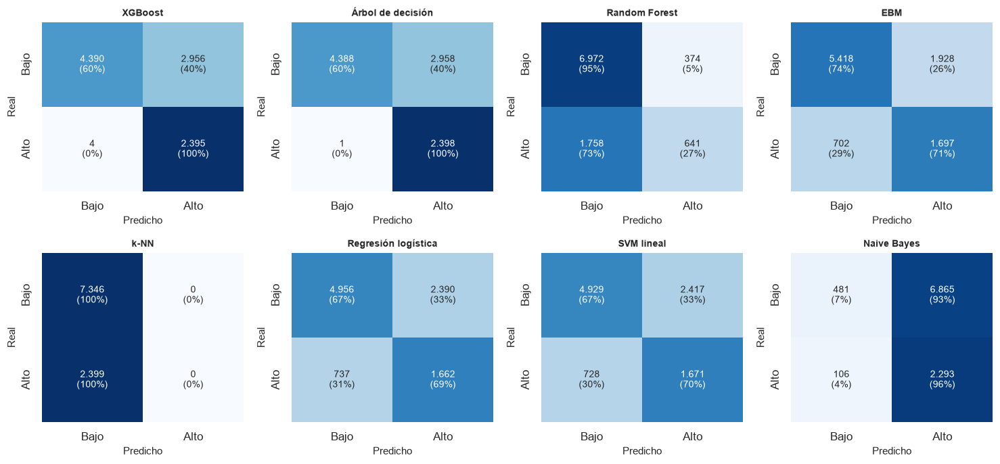
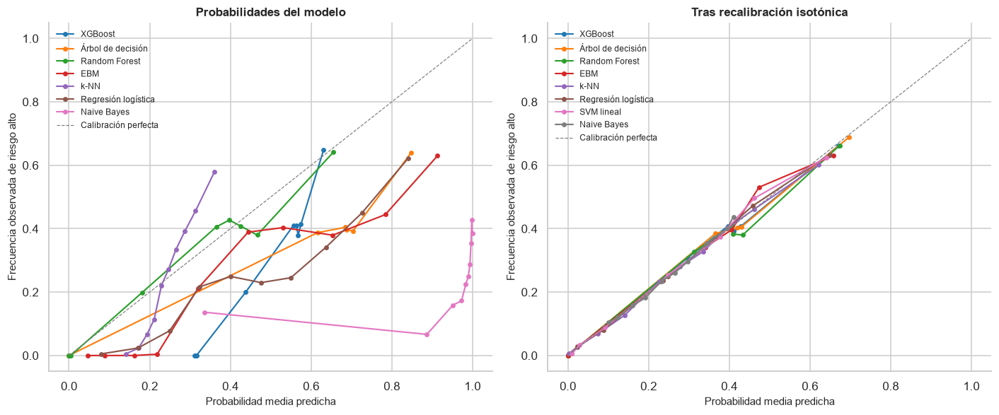
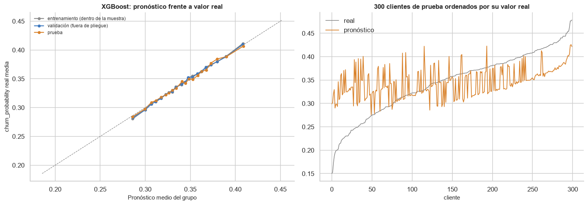
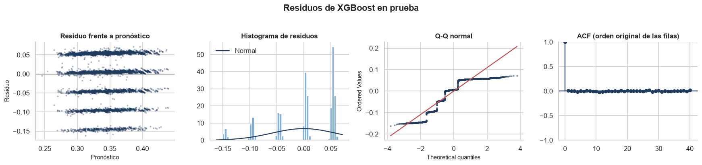
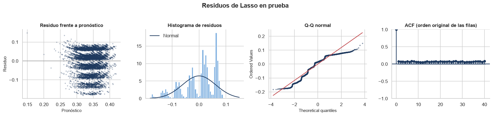
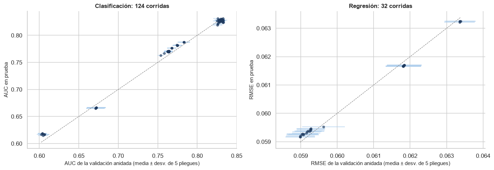

Evaluación en prueba, calibración, residuos y robustez#
Cada modelo entra con su mejor combinación de balanceo y optimizador según el bucle externo, y su modelo final (reajustado con todo el entrenamiento) toca la prueba una sola vez. Esta página cubre la evaluación de clasificación (§5.1), la de regresión (§5.2) y la robustez (§5.4). La etiqueta es la del percentil 75.
import sys
import warnings
from pathlib import Path
RAIZ = Path.cwd().parent
sys.path.insert(0, str(RAIZ))
warnings.filterwarnings('ignore')
import matplotlib.pyplot as plt
import numpy as np
import pandas as pd
from IPython.display import Markdown, display
from src import analisis, comparacion, datos, evaluacion, graficos
from src.analisis import NOMBRES_MODELO
from src.formato import dec, ent, enumerar, intervalo, p_valor, pct
graficos.estilo()
pd.set_option('display.float_format', lambda v: f'{v:,.4f}')
COMPLEMENTOS = RAIZ / 'resultados' / 'complementos'
tabla = analisis.cargar_tabla()
p = datos.preparar_todo()
X_te = p['conjuntos'].X_test.sort_index() # orden original del archivo
y_te, y_te_c = p['y_test'].loc[X_te.index], p['conjuntos'].y_test_cont.loc[X_te.index]
pred = analisis.predecir_prueba(tabla, X_te, RAIZ / 'resultados' / 'predicciones_prueba.parquet',
informar=lambda s: None)
metricas = analisis.metricas_prueba(tabla, pred, y_te, y_te_c)
mejores = {t: analisis.mejores_por_modelo(tabla, t) for t in ('clasificacion', 'regresion')}
claves = {t: m.set_index('modelo')['clave'] for t, m in mejores.items()}
def pendiente(nombre):
display(Markdown(f'*Resultado pendiente: `{nombre}` todavía no se ha calculado (lo produce `complementos.py`).*'))
display(Markdown(f'Prueba: {ent(len(y_te))} clientes, {pct(y_te.mean(), 1)} de riesgo alto.'))
Prueba: 9.745 clientes, 24,6 % de riesgo alto.
1. Clasificación#
Métricas de prueba#
La métrica principal es el AUC: no depende del umbral ni de la prevalencia, y mide lo que necesita una campaña de retención con presupuesto limitado, que es ordenar a los clientes por riesgo para contactar primero a los de mayor riesgo. Accuracy, precisión, recall y F1 se calculan con el umbral por defecto de 0,5, y el Brier mide la calidad de las probabilidades.
m_clf = metricas[metricas['tarea'] == 'clasificacion'].merge(mejores['clasificacion'][analisis.CLAVE], on=analisis.CLAVE)
m_clf = m_clf.assign(modelo=m_clf['modelo'].map(NOMBRES_MODELO)).set_index('modelo')
m_clf = m_clf[['balanceo', 'optimizador', 'metrica_cv', 'auc', 'accuracy', 'precision', 'recall', 'f1', 'brier']]
m_clf.sort_values('auc', ascending=False)
| balanceo | optimizador | metrica_cv | auc | accuracy | precision | recall | f1 | brier | |
|---|---|---|---|---|---|---|---|---|---|
| modelo | |||||||||
| EBM | class_weight | grid | 0.8292 | 0.8289 | 0.7301 | 0.4681 | 0.7074 | 0.5634 | 0.1732 |
| XGBoost | class_weight | genetica | 0.8332 | 0.8283 | 0.6963 | 0.4476 | 0.9983 | 0.6181 | 0.1875 |
| Random Forest | ninguno | genetica | 0.8326 | 0.8260 | 0.7812 | 0.6315 | 0.2672 | 0.3755 | 0.1323 |
| Árbol de decisión | class_weight | random | 0.8332 | 0.8243 | 0.6964 | 0.4477 | 0.9996 | 0.6184 | 0.1690 |
| k-NN | ninguno | genetica | 0.7836 | 0.7874 | 0.7538 | 0.0000 | 0.0000 | 0.0000 | 0.1660 |
| Regresión logística | class_weight | genetica | 0.7644 | 0.7709 | 0.6791 | 0.4102 | 0.6928 | 0.5153 | 0.1977 |
| SVM lineal | class_weight | grid | 0.7641 | 0.7706 | 0.6773 | 0.4088 | 0.6965 | 0.5152 | NaN |
| Naive Bayes | ninguno | grid | 0.6722 | 0.6662 | 0.2847 | 0.2504 | 0.9558 | 0.3968 | 0.6600 |
fig, ax = plt.subplots(figsize=(6.5, 5.8))
graficos.curvas_roc(y_te, {NOMBRES_MODELO[m]: pred[k] for m, k in claves['clasificacion'].items()}, ax=ax)
plt.show()
modelos_clf = list(claves['clasificacion'].index)
fig, axes = plt.subplots(2, (len(modelos_clf) + 1) // 2, figsize=(3.4 * ((len(modelos_clf) + 1) // 2), 6.4))
for a, m in zip(axes.ravel(), modelos_clf):
graficos.matriz_confusion(y_te, pred[claves['clasificacion'][m] + '__clase'], ax=a, titulo=NOMBRES_MODELO[m])
for a in axes.ravel()[len(modelos_clf):]:
a.axis('off')
plt.tight_layout()
plt.show()


mejor = m_clf['auc'].idxmax()
recall_extremos = m_clf['recall'].agg(['idxmin', 'idxmax'])
display(Markdown(f"""
El AUC de prueba coincide con el de la validación anidada: {enumerar(f"{m} ({dec(r.auc)} frente a {dec(r.metrica_cv)})" for m, r in m_clf.sort_values('auc', ascending=False).head(3).iterrows())}.
Las métricas con umbral, en cambio, varían de un extremo a otro aunque el AUC sea parecido: el
recall va de {dec(m_clf['recall'].min(), 3)} ({recall_extremos['idxmin']}) a {dec(m_clf['recall'].max(), 3)}
({recall_extremos['idxmax']}). El umbral de 0,5 no significa lo mismo para todos los modelos: los
entrenados con `class_weight` desplazan sus probabilidades hacia arriba y casi todo cliente lo
supera, y los entrenados sin balanceo rara vez lo alcanzan con un 25 % de positivos. Por eso el
umbral se fija aparte (abajo) y las probabilidades se calibran.
"""))
El AUC de prueba coincide con el de la validación anidada: EBM (0,8289 frente a 0,8292), XGBoost (0,8283 frente a 0,8332) y Random Forest (0,8260 frente a 0,8326).
Las métricas con umbral, en cambio, varían de un extremo a otro aunque el AUC sea parecido: el
recall va de 0,000 (k-NN) a 1,000
(Árbol de decisión). El umbral de 0,5 no significa lo mismo para todos los modelos: los
entrenados con class_weight desplazan sus probabilidades hacia arriba y casi todo cliente lo
supera, y los entrenados sin balanceo rara vez lo alcanzan con un 25 % de positivos. Por eso el
umbral se fija aparte (abajo) y las probabilidades se calibran.
El umbral de operación#
En la práctica, una campaña de retención contacta a una fracción fija de clientes. Si se contacta al 25 % de mayor riesgo (la prevalencia de la etiqueta), el umbral de cada modelo es su percentil 75 de puntaje, y la comparación entre modelos se vuelve justa.
filas = []
n_contactar = int(round(0.25 * len(y_te)))
desempate = np.random.default_rng(42).random(len(y_te)) # los empates de puntaje se rompen al azar
for m, k in claves['clasificacion'].items():
s = pred[k].to_numpy()
contactados = np.zeros(len(s), dtype=bool)
contactados[np.lexsort((desempate, -s))[:n_contactar]] = True
vp = int((contactados & (y_te.to_numpy() == 1)).sum())
filas.append({'modelo': NOMBRES_MODELO[m], 'precisión en el 25 % contactado': vp / contactados.sum(),
'recall (fracción de la fuga que se captura)': vp / int(y_te.sum()),
'lift frente a contactar al azar': (vp / contactados.sum()) / y_te.mean()})
operacion = pd.DataFrame(filas).set_index('modelo').sort_values('recall (fracción de la fuga que se captura)', ascending=False)
operacion
| precisión en el 25 % contactado | recall (fracción de la fuga que se captura) | lift frente a contactar al azar | |
|---|---|---|---|
| modelo | |||
| EBM | 0.5041 | 0.5119 | 2.0477 |
| Regresión logística | 0.5029 | 0.5106 | 2.0427 |
| SVM lineal | 0.5029 | 0.5106 | 2.0427 |
| XGBoost | 0.5025 | 0.5102 | 2.0411 |
| k-NN | 0.5004 | 0.5081 | 2.0327 |
| Árbol de decisión | 0.4947 | 0.5023 | 2.0094 |
| Random Forest | 0.4860 | 0.4935 | 1.9744 |
| Naive Bayes | 0.4019 | 0.4081 | 1.6325 |
top = operacion.iloc[0]
display(Markdown(f"""
Se contacta exactamente a {ent(n_contactar)} clientes con cada modelo (los empates de puntaje, frecuentes en
el árbol, se rompen al azar). Contactando al 25 % de mayor riesgo según {operacion.index[0]}, la campaña llegaría al
{pct(top['recall (fracción de la fuga que se captura)'], 0)} de los clientes de riesgo alto, con una precisión del
{pct(top['precisión en el 25 % contactado'], 0)}: {dec(top['lift frente a contactar al azar'], 2)} veces lo que se obtendría eligiendo al azar.
Con la misma capacidad, {operacion.index[-1]} capturaría el {pct(operacion.iloc[-1]['recall (fracción de la fuga que se captura)'], 0)}.
"""))
Se contacta exactamente a 2.436 clientes con cada modelo (los empates de puntaje, frecuentes en el árbol, se rompen al azar). Contactando al 25 % de mayor riesgo según EBM, la campaña llegaría al 51 % de los clientes de riesgo alto, con una precisión del 50 %: 2,05 veces lo que se obtendría eligiendo al azar. Con la misma capacidad, Naive Bayes capturaría el 41 %.
Calibración#
Una probabilidad está calibrada si, entre los clientes a los que el modelo asigna 0,3, el 30 % es de riesgo alto. Importa si las probabilidades se van a usar como tales (por ejemplo, para estimar la pérdida esperada de clientes). Se mide con el diagrama de confiabilidad, el Brier (error cuadrático de la probabilidad) y el ECE (distancia media ponderada entre probabilidad anunciada y frecuencia observada, con 10 intervalos). Cuando hace falta se recalibra con Platt (una logística sobre el puntaje) o con regresión isotónica (una función monótona por tramos), ajustadas solo con predicciones fuera de pliegue del entrenamiento y aplicadas después a la prueba.
if (COMPLEMENTOS / 'calibracion.csv').exists():
cal = pd.read_csv(COMPLEMENTOS / 'calibracion.csv')
cal['modelo'] = cal['modelo'].map(NOMBRES_MODELO)
display(cal.pivot_table(index='modelo', columns='version', values=['brier', 'ece']).round(4))
probas = pd.read_parquet(COMPLEMENTOS / 'calibracion_prueba.parquet')
fig, ax = plt.subplots(1, 2, figsize=(13, 5.5))
sin = {NOMBRES_MODELO[m]: probas[f'{k}__sin recalibrar'] for m, k in claves['clasificacion'].items()
if f'{k}__sin recalibrar' in probas}
iso = {NOMBRES_MODELO[m]: probas[f'{k}__isotónica'] for m, k in claves['clasificacion'].items()}
graficos.diagrama_confiabilidad(probas['y_bin'], sin, ax=ax[0], titulo='Probabilidades del modelo')
graficos.diagrama_confiabilidad(probas['y_bin'], iso, ax=ax[1], titulo='Tras recalibración isotónica')
plt.tight_layout()
plt.show()
piv = cal.pivot_table(index='modelo', columns='version', values='ece')
sin = piv['sin recalibrar'].dropna()
mejora = (sin - piv['isotónica'].reindex(sin.index))
sin_prob = [m for m in piv.index if m not in sin.index]
bal = cal.drop_duplicates('modelo').set_index('modelo')['balanceo']
peores = sin.sort_values(ascending=False).head(4)
auc_cambio = cal.pivot_table(index='modelo', columns='version', values='auc')
display(Markdown(f"""
Sin recalibrar, el ECE va de {dec(sin.min(), 3)} ({sin.idxmin()}) a {dec(sin.max(), 3)} ({sin.idxmax()}). Los peor calibrados
son {enumerar(f"{m} ({dec(v, 3)}; " + ('sin balanceo' if bal[m] == 'ninguno' else f'con {bal[m]}') + ")" for m, v in peores.items())}: los modelos entrenados con `class_weight`
desplazan sus probabilidades hacia arriba a propósito, y Naive Bayes, que supone independencia entre 78
variables, produce probabilidades extremas. La recalibración isotónica, ajustada solo con predicciones
fuera de pliegue del entrenamiento, {'reduce el ECE de todos' if (mejora > 0).all() else 'reduce el ECE de todos salvo ' + enumerar(mejora[mejora <= 0].index)}
(queda entre {dec(piv['isotónica'].min(), 3)} y {dec(piv['isotónica'].max(), 3)}) y apenas mueve el AUC (como mucho
{dec((auc_cambio['isotónica'] - auc_cambio['Platt']).abs().max(), 4)} frente a Platt), porque es monótona: corrige las probabilidades sin cambiar el orden de
los clientes.{(' El ' + enumerar(sin_prob) + (' no da' if len(sin_prob) == 1 else ' no dan') + ' probabilidades (solo una función de decisión): Platt e isotónica son las que convierten su puntaje en probabilidad.') if sin_prob else ''}
"""))
else:
pendiente('calibracion.csv')
| brier | ece | |||||
|---|---|---|---|---|---|---|
| version | Platt | isotónica | sin recalibrar | Platt | isotónica | sin recalibrar |
| modelo | ||||||
| EBM | 0.1438 | 0.1338 | 0.1732 | 0.0790 | 0.0060 | 0.1698 |
| Naive Bayes | 0.1784 | 0.1736 | 0.6600 | 0.0380 | 0.0041 | 0.6824 |
| Random Forest | 0.1325 | 0.1307 | 0.1323 | 0.0281 | 0.0029 | 0.0274 |
| Regresión logística | 0.1537 | 0.1521 | 0.1977 | 0.0319 | 0.0064 | 0.1993 |
| SVM lineal | 0.1539 | 0.1523 | NaN | 0.0320 | 0.0074 | NaN |
| XGBoost | 0.1318 | 0.1305 | 0.1875 | 0.0263 | 0.0075 | 0.2201 |
| k-NN | 0.1523 | 0.1510 | 0.1660 | 0.0300 | 0.0082 | 0.0837 |
| Árbol de decisión | 0.1309 | 0.1308 | 0.1690 | 0.0105 | 0.0100 | 0.1442 |

Sin recalibrar, el ECE va de 0,027 (Random Forest) a 0,682 (Naive Bayes). Los peor calibrados
son Naive Bayes (0,682; sin balanceo), XGBoost (0,220; con class_weight), Regresión logística (0,199; con class_weight) y EBM (0,170; con class_weight): los modelos entrenados con class_weight
desplazan sus probabilidades hacia arriba a propósito, y Naive Bayes, que supone independencia entre 78
variables, produce probabilidades extremas. La recalibración isotónica, ajustada solo con predicciones
fuera de pliegue del entrenamiento, reduce el ECE de todos
(queda entre 0,003 y 0,010) y apenas mueve el AUC (como mucho
0,0025 frente a Platt), porque es monótona: corrige las probabilidades sin cambiar el orden de
los clientes. El SVM lineal no da probabilidades (solo una función de decisión): Platt e isotónica son las que convierten su puntaje en probabilidad.
El balanceo, medido en prueba#
clf_todas = metricas[metricas['tarea'] == 'clasificacion']
mejor_por_bal = clf_todas.loc[clf_todas.groupby(['modelo', 'balanceo'])['metrica_cv'].idxmax()]
bal_auc = mejor_por_bal.pivot(index='modelo', columns='balanceo', values='auc')
bal_rec = mejor_por_bal.pivot(index='modelo', columns='balanceo', values='recall')
bal_auc.index = bal_rec.index = [NOMBRES_MODELO[m] for m in bal_auc.index]
display(bal_auc.round(4))
display(bal_rec.round(3))
d_smote = (bal_auc['smote'] - bal_auc['ninguno']).dropna()
d_cw = (bal_auc['class_weight'] - bal_auc['ninguno']).dropna()
display(Markdown(f"""
En prueba, `class_weight` cambia el AUC entre {dec(d_cw.min(), 4, True)} y {dec(d_cw.max(), 4, True)} frente a no balancear, y
SMOTE entre {dec(d_smote.min(), 4, True)} ({d_smote.idxmin()}) y {dec(d_smote.max(), 4, True)} ({d_smote.idxmax()}): lo baja en
{int((d_smote < 0).sum())} de {len(d_smote)} modelos{('; las excepciones (' if (d_smote > 0).sum() > 1 else '; la excepción (') + enumerar(d_smote[d_smote > 0].index) + (') son de milésimas' if (d_smote > 0).sum() > 1 else ') es de milésimas') + ', dentro de la variabilidad de la prueba' if (d_smote > 0).any() else ''}.
Lo que cambia de verdad es el recall con el umbral de 0,5. El balanceo, en este problema, es una forma
de elegir el punto de operación, no de mejorar el modelo.
"""))
| balanceo | adasyn | class_weight | ninguno | smote |
|---|---|---|---|---|
| Árbol de decisión | 0.8206 | 0.8243 | 0.8232 | 0.8288 |
| EBM | 0.8265 | 0.8289 | 0.8261 | 0.8253 |
| k-NN | 0.7817 | NaN | 0.7874 | 0.7767 |
| Regresión logística | 0.7708 | 0.7709 | 0.7710 | 0.7706 |
| Naive Bayes | 0.6185 | 0.6662 | 0.6662 | 0.6167 |
| Random Forest | 0.8263 | 0.8269 | 0.8260 | 0.8272 |
| SVM lineal | 0.7701 | 0.7706 | 0.7697 | 0.7699 |
| XGBoost | 0.8273 | 0.8283 | 0.8280 | 0.8265 |
| balanceo | adasyn | class_weight | ninguno | smote |
|---|---|---|---|---|
| Árbol de decisión | 0.5240 | 1.0000 | 0.2380 | 0.4640 |
| EBM | 0.3440 | 0.7070 | 0.3220 | 0.3410 |
| k-NN | 0.8760 | NaN | 0.0000 | 0.8790 |
| Regresión logística | 0.6800 | 0.6930 | 0.2850 | 0.6800 |
| Naive Bayes | 0.9120 | 0.9600 | 0.9560 | 0.9160 |
| Random Forest | 0.4640 | 0.9920 | 0.2670 | 0.3880 |
| SVM lineal | 0.6850 | 0.6970 | 0.2310 | 0.6850 |
| XGBoost | 0.3220 | 0.9980 | 0.0000 | 0.3260 |
En prueba, class_weight cambia el AUC entre −0,0001 y +0,0029 frente a no balancear, y
SMOTE entre −0,0496 (Naive Bayes) y +0,0055 (Árbol de decisión): lo baja en
5 de 8 modelos; las excepciones (Árbol de decisión, Random Forest y SVM lineal) son de milésimas, dentro de la variabilidad de la prueba.
Lo que cambia de verdad es el recall con el umbral de 0,5. El balanceo, en este problema, es una forma
de elegir el punto de operación, no de mejorar el modelo.
2. Regresión#
Métricas de prueba con intervalos bootstrap BCa#
pron = {m: pred[k].to_numpy() for m, k in claves['regresion'].items()}
int_reg = comparacion.intervalos_regresion(y_te_c, pron)
int_reg.index = [NOMBRES_MODELO[m] for m in int_reg.index]
cv_reg = mejores['regresion'].set_index('modelo')['metrica']
int_reg.insert(0, 'RMSE validación anidada', [cv_reg[m] for m in pron])
int_reg.sort_values('rmse')
| RMSE validación anidada | rmse | rmse_ic_inf | rmse_ic_sup | mae | mae_ic_inf | mae_ic_sup | r2 | r2_ic_inf | r2_ic_sup | |
|---|---|---|---|---|---|---|---|---|---|---|
| XGBoost | 0.0590 | 0.0592 | 0.0584 | 0.0600 | 0.0471 | 0.0464 | 0.0478 | 0.2182 | 0.2031 | 0.2315 |
| EBM | 0.0590 | 0.0593 | 0.0585 | 0.0601 | 0.0472 | 0.0465 | 0.0480 | 0.2161 | 0.2008 | 0.2300 |
| Random Forest | 0.0592 | 0.0593 | 0.0585 | 0.0601 | 0.0473 | 0.0466 | 0.0480 | 0.2146 | 0.1995 | 0.2283 |
| Árbol de decisión | 0.0593 | 0.0594 | 0.0586 | 0.0603 | 0.0475 | 0.0468 | 0.0482 | 0.2112 | 0.1960 | 0.2255 |
| Lasso | 0.0618 | 0.0617 | 0.0608 | 0.0625 | 0.0507 | 0.0500 | 0.0514 | 0.1511 | 0.1381 | 0.1639 |
| Ridge | 0.0618 | 0.0617 | 0.0608 | 0.0625 | 0.0507 | 0.0500 | 0.0514 | 0.1509 | 0.1377 | 0.1637 |
| SVR lineal | 0.0618 | 0.0617 | 0.0609 | 0.0626 | 0.0507 | 0.0500 | 0.0514 | 0.1499 | 0.1365 | 0.1629 |
| k-NN | 0.0634 | 0.0632 | 0.0624 | 0.0641 | 0.0511 | 0.0504 | 0.0519 | 0.1080 | 0.1011 | 0.1147 |
Entrenamiento, validación y prueba#
La guía pide graficar las predicciones sobre los tres conjuntos. Para entrenamiento se usan las predicciones del modelo final sobre los clientes con los que se ajustó; para validación, las predicciones fuera de pliegue (cada cliente de entrenamiento predicho por un modelo que no lo vio); y la prueba. Los clientes se agrupan en 20 grupos de igual tamaño según el pronóstico.
mejor_r = mejores['regresion'].iloc[0]
if (COMPLEMENTOS / 'fuera_de_pliegue.parquet').exists():
fdp = pd.read_parquet(COMPLEMENTOS / 'fuera_de_pliegue.parquet')
k = mejor_r['clave']
conjuntos = {'entrenamiento (dentro de la muestra)': (fdp['y_cont'], fdp[f'{k}__entrenamiento']),
'validación (fuera de pliegue)': (fdp['y_cont'], fdp[f'{k}__fuera_de_pliegue']),
'prueba': (y_te_c, pred[k])}
fig, ax = plt.subplots(1, 2, figsize=(14, 5))
filas = []
for (nombre, (y, yh)), color in zip(conjuntos.items(), ('#8c8c8c', '#3d78bf', '#d9822b')):
y, yh = np.asarray(y), np.asarray(yh)
orden = np.argsort(yh)
grupos = np.array_split(orden, 20)
ax[0].plot([yh[g].mean() for g in grupos], [y[g].mean() for g in grupos], marker='o', ms=4, color=color, label=nombre)
filas.append({'conjunto': nombre, **evaluacion.metricas_regresion(y, yh)})
lim = [float(y_te_c.quantile(0.02)), float(y_te_c.quantile(0.98))]
ax[0].plot(lim, lim, ls='--', color='grey', lw=0.8)
ax[0].set_xlabel('Pronóstico medio del grupo')
ax[0].set_ylabel('churn_probability real media')
ax[0].set_title(f'{NOMBRES_MODELO[mejor_r["modelo"]]}: pronóstico frente a valor real')
ax[0].legend(frameon=False, fontsize=8)
muestra = np.random.default_rng(42).choice(len(y_te_c), 300, replace=False)
orden = muestra[np.argsort(y_te_c.to_numpy()[muestra])]
ax[1].plot(y_te_c.to_numpy()[orden], color='grey', lw=1, label='real')
ax[1].plot(pred[k].to_numpy()[orden], color='#d9822b', lw=1.2, label='pronóstico')
ax[1].set_title('300 clientes de prueba ordenados por su valor real')
ax[1].set_xlabel('cliente')
ax[1].legend(frameon=False)
plt.tight_layout()
plt.show()
tres = pd.DataFrame(filas).set_index('conjunto')
display(tres)
display(Markdown(f"""
El R² cae de {dec(tres.iloc[0]['r2'], 3)} dentro de la muestra a {dec(tres.iloc[1]['r2'], 3)} fuera de pliegue y {dec(tres.iloc[2]['r2'], 3)}
en prueba: el modelo se ajusta algo más a los clientes que vio, pero validación y prueba coinciden, de
modo que la estimación de la validación es fiable. El panel derecho muestra el límite de la tarea: el
pronóstico sigue la tendencia pero se comprime hacia la media, porque la mayor parte de la variación de
`churn_probability` la explica `active_products`, que el modelo no ve.
"""))
else:
pendiente('fuera_de_pliegue.parquet')

| rmse | mae | r2 | |
|---|---|---|---|
| conjunto | |||
| entrenamiento (dentro de la muestra) | 0.0587 | 0.0467 | 0.2343 |
| validación (fuera de pliegue) | 0.0590 | 0.0469 | 0.2280 |
| prueba | 0.0592 | 0.0471 | 0.2182 |
El R² cae de 0,234 dentro de la muestra a 0,228 fuera de pliegue y 0,218
en prueba: el modelo se ajusta algo más a los clientes que vio, pero validación y prueba coinciden, de
modo que la estimación de la validación es fiable. El panel derecho muestra el límite de la tarea: el
pronóstico sigue la tendencia pero se comprime hacia la media, porque la mayor parte de la variación de
churn_probability la explica active_products, que el modelo no ve.
Diagnóstico de los residuos#
La guía (§5.2.2 y Cuadro 3) pide verificar los supuestos sobre los residuos de cada modelo de regresión: White (¿varianza constante?), BDS (¿residuos independientes e idénticamente distribuidos?), la ACF con Ljung-Box (¿autocorrelación?) y la normalidad. Los residuos se toman en el orden original del archivo de clientes. Primero, la tabla resumen de todos los modelos; después, el detalle gráfico del mejor modelo y del Lasso de la Entrega 2.
cuadro = []
for m, k in claves['regresion'].items():
d_m = evaluacion.diagnostico_residuos(y_te_c, pron[m])
met = evaluacion.metricas_regresion(y_te_c.to_numpy(), pron[m])
cuadro.append({'modelo': NOMBRES_MODELO[m], 'RMSE': met['rmse'], 'MAE': met['mae'], 'R²': met['r2'],
'p White': d_m.loc['White', 'p'], 'p BDS (dim. 2)': d_m.loc['BDS, dimensión 2 (3000 residuos)', 'p'],
'p Ljung-Box (10)': d_m.loc['Ljung-Box, 10 retardos', 'p'], 'p Jarque-Bera': d_m.loc['Jarque-Bera', 'p'],
'asimetría': d_m.loc['asimetría', 'estadistico']})
cuadro3 = pd.DataFrame(cuadro).set_index('modelo').sort_values('RMSE')
cuadro3
| RMSE | MAE | R² | p White | p BDS (dim. 2) | p Ljung-Box (10) | p Jarque-Bera | asimetría | |
|---|---|---|---|---|---|---|---|---|
| modelo | ||||||||
| XGBoost | 0.0592 | 0.0471 | 0.2182 | 0.6383 | 0.4378 | 0.8112 | 0.0000 | -0.9051 |
| EBM | 0.0593 | 0.0472 | 0.2161 | 0.6669 | 0.5456 | 0.8074 | 0.0000 | -0.9016 |
| Random Forest | 0.0593 | 0.0473 | 0.2146 | 0.6310 | 0.5487 | 0.7554 | 0.0000 | -0.8957 |
| Árbol de decisión | 0.0594 | 0.0475 | 0.2112 | 0.7900 | 0.6031 | 0.7201 | 0.0000 | -0.8910 |
| Lasso | 0.0617 | 0.0507 | 0.1511 | 0.3907 | 0.6138 | 0.0000 | 0.0000 | -0.8001 |
| Ridge | 0.0617 | 0.0507 | 0.1509 | 0.6149 | 0.6500 | 0.0000 | 0.0000 | -0.8018 |
| SVR lineal | 0.0617 | 0.0507 | 0.1499 | 0.6022 | 0.5969 | 0.0000 | 0.0000 | -0.8006 |
| k-NN | 0.0632 | 0.0511 | 0.1080 | 0.5412 | 0.3275 | 0.0000 | 0.0000 | -0.7332 |
diagnosticos = {}
for m in [mejor_r['modelo'], 'lasso']:
diagnosticos[NOMBRES_MODELO[m]] = evaluacion.diagnostico_residuos(y_te_c, pron[m])
graficos.panel_residuos(y_te_c, pron[m], titulo=f'Residuos de {NOMBRES_MODELO[m]} en prueba')
plt.show()
pd.concat(diagnosticos, axis=1)


| XGBoost | Lasso | |||||
|---|---|---|---|---|---|---|
| hipótesis nula | estadistico | p | hipótesis nula | estadistico | p | |
| prueba | ||||||
| White | varianza constante de los residuos | 0.8980 | 0.6383 | varianza constante de los residuos | 1.8795 | 0.3907 |
| BDS, dimensión 2 (3000 residuos) | residuos i.i.d. | -0.7758 | 0.4378 | residuos i.i.d. | -0.5046 | 0.6138 |
| BDS, dimensión 3 (3000 residuos) | residuos i.i.d. | -0.9460 | 0.3442 | residuos i.i.d. | -0.7166 | 0.4736 |
| Ljung-Box, 10 retardos | sin autocorrelación | 6.0485 | 0.8112 | sin autocorrelación | 466.4354 | 0.0000 |
| Ljung-Box, 20 retardos | sin autocorrelación | 14.0153 | 0.8297 | sin autocorrelación | 881.8707 | 0.0000 |
| Jarque-Bera | normalidad | 1,340.1656 | 0.0000 | normalidad | 1,046.1670 | 0.0000 |
| D'Agostino-Pearson | normalidad | 1,002.7799 | 0.0000 | normalidad | 822.9394 | 0.0000 |
| asimetría | 0 si es simétrica | -0.9051 | NaN | 0 si es simétrica | -0.8001 | NaN |
| curtosis en exceso | 0 si es normal | -0.1531 | NaN | 0 si es normal | -0.1270 | NaN |
d = diagnosticos[NOMBRES_MODELO[mejor_r['modelo']]]
rechaza = lambda prueba: d.loc[prueba, 'p'] < 0.05
het = cuadro3[cuadro3['p White'] < 0.05].index.tolist()
dep = cuadro3[(cuadro3['p BDS (dim. 2)'] < 0.05) | (cuadro3['p Ljung-Box (10)'] < 0.05)].index.tolist()
display(Markdown(f"""
En el conjunto de modelos, White rechaza la varianza constante en {len(het)} de {len(cuadro3)}
({enumerar(het) if het else 'ninguno'}) y BDS o Ljung-Box detectan dependencia en {len(dep)}
({enumerar(dep) if dep else 'ninguno'}){': son los modelos que no captan bien el efecto no lineal de la edad, y su residuo conserva parte de la estructura por cohortes con que está ordenado el archivo' if dep else ''}. La normalidad se rechaza en todos: el residuo de cualquier
modelo hereda la mezcla por niveles de `active_products`. Para {NOMBRES_MODELO[mejor_r['modelo']]}:
- **Heterocedasticidad.** White {'rechaza' if rechaza('White') else 'no rechaza'} la varianza constante ({p_valor(d.loc['White', 'p'])}). {'La dispersión del residuo cambia con el nivel pronosticado: los intervalos de predicción deberían depender del riesgo, y el RMSE promedia errores de magnitud distinta en cada tramo.' if rechaza('White') else ''}
- **Dependencia.** Ljung-Box con 10 retardos {'rechaza' if rechaza('Ljung-Box, 10 retardos') else 'no rechaza'} la ausencia de autocorrelación
({p_valor(d.loc['Ljung-Box, 10 retardos', 'p'])}) y BDS {'rechaza' if rechaza('BDS, dimensión 2 (3000 residuos)') else 'no rechaza'} la independencia
({p_valor(d.loc['BDS, dimensión 2 (3000 residuos)', 'p'])}). Los clientes no forman una serie temporal, pero el archivo está
ordenado por cohortes de edad (sección de datos), así que una dependencia en este orden indicaría
que el modelo deja sin explicar algo propio de cada cohorte. {'No es el caso: el modelo capta el efecto de la cohorte y lo que queda no se agrupa por bloques.' if not (rechaza('Ljung-Box, 10 retardos') or rechaza('BDS, dimensión 2 (3000 residuos)')) else 'Es lo que ocurre: los residuos de clientes vecinos se parecen más de lo que lo harían al azar.'}
- **Normalidad.** Jarque-Bera {'rechaza' if rechaza('Jarque-Bera') else 'no rechaza'} ({p_valor(d.loc['Jarque-Bera', 'p'])}); asimetría
{dec(d.loc['asimetría', 'estadistico'], 2)} y curtosis en exceso {dec(d.loc['curtosis en exceso', 'estadistico'], 2)}. Con casi 10.000 residuos,
cualquier desviación pequeña es significativa; lo relevante es su forma: el residuo hereda la
distribución por escalones de `active_products`, una mezcla de cinco componentes que ninguna
variable observable separa.
Ninguna de estas propiedades invalida el RMSE como medida de error, pero sí los intervalos de
predicción basados en normalidad: si se necesitaran, habría que construirlos con métodos que no la
supongan (por ejemplo, regresión cuantílica o *conformal prediction*).
"""))
En el conjunto de modelos, White rechaza la varianza constante en 0 de 8
(ninguno) y BDS o Ljung-Box detectan dependencia en 4
(Lasso, Ridge, SVR lineal y k-NN): son los modelos que no captan bien el efecto no lineal de la edad, y su residuo conserva parte de la estructura por cohortes con que está ordenado el archivo. La normalidad se rechaza en todos: el residuo de cualquier
modelo hereda la mezcla por niveles de active_products. Para XGBoost:
Heterocedasticidad. White no rechaza la varianza constante (p = 0,638).
Dependencia. Ljung-Box con 10 retardos no rechaza la ausencia de autocorrelación (p = 0,811) y BDS no rechaza la independencia (p = 0,438). Los clientes no forman una serie temporal, pero el archivo está ordenado por cohortes de edad (sección de datos), así que una dependencia en este orden indicaría que el modelo deja sin explicar algo propio de cada cohorte. No es el caso: el modelo capta el efecto de la cohorte y lo que queda no se agrupa por bloques.
Normalidad. Jarque-Bera rechaza (p < 10⁻²⁹¹); asimetría −0,91 y curtosis en exceso −0,15. Con casi 10.000 residuos, cualquier desviación pequeña es significativa; lo relevante es su forma: el residuo hereda la distribución por escalones de
active_products, una mezcla de cinco componentes que ninguna variable observable separa.
Ninguna de estas propiedades invalida el RMSE como medida de error, pero sí los intervalos de predicción basados en normalidad: si se necesitaran, habría que construirlos con métodos que no la supongan (por ejemplo, regresión cuantílica o conformal prediction).
3. Robustez#
Variabilidad entre pliegues y concordancia con la prueba#
todas = metricas.copy()
fig, ax = plt.subplots(1, 2, figsize=(13, 4.6))
for a, (t, col, nombre) in zip(ax, (('clasificacion', 'auc', 'AUC'), ('regresion', 'rmse', 'RMSE'))):
sub = todas[todas['tarea'] == t]
a.errorbar(sub['metrica_cv'], sub[col], xerr=sub['desv_cv'], fmt='o', ms=4, alpha=0.6, color=graficos.AZUL,
ecolor='#a8cbec')
lim = [min(sub['metrica_cv'].min(), sub[col].min()), max(sub['metrica_cv'].max(), sub[col].max())]
a.plot(lim, lim, ls='--', color='grey', lw=0.8)
a.set_xlabel(f'{nombre} de la validación anidada (media ± desv. de 5 pliegues)')
a.set_ylabel(f'{nombre} en prueba')
a.set_title(f'{graficos.NOMBRE_TAREA[t]}: {len(sub)} corridas')
plt.tight_layout()
plt.show()
sub_c = todas[todas['tarea'] == 'clasificacion']
sub_r = todas[todas['tarea'] == 'regresion']
display(Markdown(f"""
La validación anidada predice muy bien el desempeño en prueba: la correlación entre el AUC externo y el
de prueba es {dec(sub_c[['metrica_cv', 'auc']].corr().iloc[0, 1], 4)} sobre {len(sub_c)} corridas de clasificación, con una
diferencia media de {dec((sub_c['auc'] - sub_c['metrica_cv']).mean(), 4, True)}; en regresión, la diferencia media de RMSE es
{dec((sub_r['rmse'] - sub_r['metrica_cv']).mean(), 5, True)}. No hay optimismo que corregir: la separación estricta entre la
búsqueda de hiperparámetros (bucle interno) y la estimación (bucle externo) cumplió su función.
"""))

La validación anidada predice muy bien el desempeño en prueba: la correlación entre el AUC externo y el de prueba es 0,9968 sobre 124 corridas de clasificación, con una diferencia media de +0,0016; en regresión, la diferencia media de RMSE es +0,00001. No hay optimismo que corregir: la separación estricta entre la búsqueda de hiperparámetros (bucle interno) y la estimación (bucle externo) cumplió su función.
Sensibilidad a las semillas#
Se reentrenan los modelos finales de Random Forest, XGBoost, SVM y la EBM con distintas semillas (la del modelo y, si lo hay, la del muestreador; los datos no cambian), y se repite la búsqueda del árbol de decisión con cinco semillas de cada optimizador estocástico.
if (COMPLEMENTOS / 'semillas.csv').exists():
sem = pd.read_csv(COMPLEMENTOS / 'semillas.csv')
sem['modelo'] = sem['modelo'].map(NOMBRES_MODELO)
resumen_sem = sem.groupby(['tarea', 'modelo']).agg(
semillas=('semilla', 'size'), auc_media=('auc', 'mean'), auc_desv=('auc', 'std'),
rmse_media=('rmse', 'mean'), rmse_desv=('rmse', 'std'))
display(resumen_sem)
sc = resumen_sem.xs('clasificacion')
brecha = m_clf['auc'].sort_values(ascending=False)
display(Markdown(f"""
La desviación del AUC de prueba entre semillas es de {dec(sc['auc_desv'].min(), 4)} a {dec(sc['auc_desv'].max(), 4)}.
{('El SVM lineal no cambia con la semilla: su solucionador primal es determinista. ' if (sc.loc['SVM lineal', 'auc_desv'] if 'SVM lineal' in sc.index else 1) < 1e-9 else '')}La diferencia entre
los dos mejores modelos en prueba ({brecha.index[0]} y {brecha.index[1]}) es de {dec(brecha.iloc[0] - brecha.iloc[1], 4)}:
{'del mismo orden que la variabilidad por semilla, así que no es una diferencia que deba guiar la elección' if brecha.iloc[0] - brecha.iloc[1] < 3 * sc['auc_desv'].max() else 'mayor que la variabilidad por semilla'}.
"""))
else:
pendiente('semillas.csv')
| semillas | auc_media | auc_desv | rmse_media | rmse_desv | ||
|---|---|---|---|---|---|---|
| tarea | modelo | |||||
| clasificacion | EBM | 5 | 0.8288 | 0.0000 | NaN | NaN |
| Random Forest | 5 | 0.8281 | 0.0010 | NaN | NaN | |
| SVM lineal | 10 | 0.7706 | 0.0000 | NaN | NaN | |
| XGBoost | 10 | 0.8282 | 0.0003 | NaN | NaN | |
| regresion | EBM | 5 | NaN | NaN | 0.0593 | 0.0000 |
| Random Forest | 5 | NaN | NaN | 0.0593 | 0.0000 | |
| XGBoost | 10 | NaN | NaN | 0.0592 | 0.0000 |
La desviación del AUC de prueba entre semillas es de 0,0000 a 0,0010. El SVM lineal no cambia con la semilla: su solucionador primal es determinista. La diferencia entre los dos mejores modelos en prueba (EBM y XGBoost) es de 0,0006: del mismo orden que la variabilidad por semilla, así que no es una diferencia que deba guiar la elección.
if (COMPLEMENTOS / 'semillas_optimizadores.csv').exists():
so = pd.read_csv(COMPLEMENTOS / 'semillas_optimizadores.csv')
r_so = so.groupby('optimizador').agg(interno_media=('mejor_interno', 'mean'), interno_desv=('mejor_interno', 'std'),
prueba_media=('auc_prueba', 'mean'), prueba_desv=('auc_prueba', 'std'),
segundos=('tiempo_s', 'mean')).reindex(['random', 'bayesiana', 'genetica'])
display(r_so)
display(Markdown(f"""
Con el mismo árbol de decisión y los mismos pliegues internos, la semilla del optimizador mueve el AUC
de prueba con una desviación de {dec(r_so.loc['random', 'prueba_desv'], 4)} en Random,
{dec(r_so.loc['bayesiana', 'prueba_desv'], 4)} en la bayesiana y {dec(r_so.loc['genetica', 'prueba_desv'], 4)} en la genética: la
elección de hiperparámetros tiene una componente aleatoria del mismo orden que las diferencias entre
métodos de la sección de optimizadores, lo que refuerza la conclusión de que los métodos terminan
empatados en la métrica final.
"""))
else:
pendiente('semillas_optimizadores.csv')
| interno_media | interno_desv | prueba_media | prueba_desv | segundos | |
|---|---|---|---|---|---|
| optimizador | |||||
| random | 0.8328 | 0.0005 | 0.8252 | 0.0025 | 31.2188 |
| bayesiana | 0.8329 | 0.0002 | 0.8246 | 0.0022 | 47.3878 |
| genetica | 0.8329 | 0.0001 | 0.8243 | 0.0009 | 49.4224 |
Con el mismo árbol de decisión y los mismos pliegues internos, la semilla del optimizador mueve el AUC de prueba con una desviación de 0,0025 en Random, 0,0022 en la bayesiana y 0,0009 en la genética: la elección de hiperparámetros tiene una componente aleatoria del mismo orden que las diferencias entre métodos de la sección de optimizadores, lo que refuerza la conclusión de que los métodos terminan empatados en la métrica final.